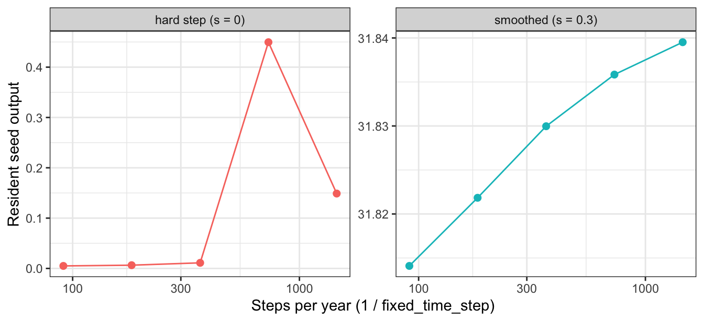

Once the model has been expressed as ordinary differential equations (ODEs), the solver’s task is straightforward in principle: begin with the current state and move it forward through time in a sequence of small steps. The important practical question is how large those steps should be. Large steps can let unobserved numerical error accumulate; very small steps spend a great deal of computation on periods when little is changing.
The solver balances these two risks by adapting as it goes. For each proposed step, it also constructs a more careful estimate of that same step. The difference between the estimates is used as an error estimate. A small difference permits a longer next step, while a large difference triggers a shorter, more cautious one. In this way, the calculation concentrates effort where growth and mortality change quickly and takes larger strides through quieter periods, while keeping the estimated error per step below a chosen tolerance. The sections below explain how plant does this and how to control it.
plant casts the entire patch as a system of ordinary differential equations (ODEs) and steps it through time with classic ODE methods. (For details on the equations themselves see the size-structured PDE page.) This page first describes the Runge–Kutta solver and the Control() parameters that govern it, then works through the trade-off between the default adaptive stepper and a fixed-step forward-Euler mode using a work–precision diagram.
The adaptive Runge–Kutta 45 stepper
plant integrates its system of ODEs with an explicit Runge-Kutta solver: the adaptive Runge-Kutta Cash-Karp 4-5 (RK45) algorithm.
Cash-Karp RK45 is an embedded method: the same six evaluations of the rates of change produce both a fourth-order and a fifth-order estimate of the next state. Their disagreement estimates the local numerical error. If that estimate is too large, the solver rejects the proposed step and retries with a smaller one. If it is comfortably below the target, the solver attempts a larger step next time. Because both estimates share the same rate evaluations, error control is much cheaper than solving the step twice with separate methods. For general background, see Runge-Kutta methods.
RK45 is an explicit method: it calculates the next state directly from the current state and its rates of change. An implicit method instead solves an equation involving both the current and future states. Explicit methods are usually simpler and cheaper per step, but can require impractically small steps for a stiff system, in which important processes operate on very different time scales. Implicit methods cost more per step but are often more stable for such problems. See explicit and implicit methods for more background.
In practice, RK45 has been extremely stable and fast for the size-density distribution. It can nevertheless struggle when an extension makes the system stiff. For example:
When implementing soil water into plant via the Richards Equation, Isaac Towers found the system became stiff.
When implementing the FF16 model in another solver, Joshi et al 2023 https://doi.org/10.1101/2023.08.04.551683 reported that the system became stiff when enabling a continuous feedback of seeds into germination.
When extending the model, therefore, check carefully for stiff behaviour.
How the templated C++ solver is set up
The characteristic method that solves density regularly introduces new nodes. That means the ODE system must be resized as a simulation progresses. To support this, Rich FitzJohn designed a custom RK45-based ODE solver class. The code is built into the model, with some details ported from the GNU Scientific Library(Galassi, 2009).
The main interface is odelia::ode::Solver. It was extracted from plant into the standalone odelia library, so it no longer lives under inst/include/plant/; plant includes it with #include <odelia/ode_solver.hpp> (see scm.h). The class is parameterised by a template System, allowing any class that provides the required interface to be treated as an ODE system. This is the same broad C++ idea that allows a vector to hold a chosen data type.
The model’s main solver is SCM (in scm.h). It creates an ODE solver for the patch type and owns the patch instance containing the species and environment.
patch_type patch;# Instance of patchodelia::ode::Solver<patch_type> solver;# ODE solver (owns the system)
To advance the system, call one of the following methods. They use the patch to evaluate rates of change. One accepts specified fixed times; the other lets the solver select an adaptive spacing. Because the solver now owns the system, neither call receives the patch as an argument:
A third method, solver.advance_euler(...), backs the fixed-step forward-Euler mode (fixed_time_step, discussed below).
Behind these calls, the solver exchanges states and rates of change with the patch. The patch supplies the biological information that determines the rates; the ODE solver applies RK45 to those rates to calculate future states.
The following function resizes the ODE system after a node is introduced.
solver.set_state_from_system()
For this arrangement to work, the patch class (see patch.h) supplies the essential functions required by the ODE system.
// * ODE interface// Caluclate size of ode system (number of equations).size_t ode_size()const;// How many auxiallary variables are we tracking. These are being collected but// are not part of core ode systemsize_t aux_size()const;double ode_time()const;// Retrieve ode state from patch and save into the ode solverode::iterator ode_state(ode::iterator it)const;// Retrieve ode rates from patch and save into the ode solverode::iterator ode_rates(ode::iterator it)const;// Retrieve auxillary variables and save into the ode solverode::iterator ode_aux(ode::iterator it)const;// Set state of patch, based on estimate of future state estimated by the solverode::const_iterator set_ode_state(ode::const_iterator it,double time);
The iterators are important here: they translate the state held in a complicated structure such as a patch into the vector required by the ODE solver, and then translate it back again.
Stepping individuals and other systems
Because this is templated C++, odelia::ode::Solver can step any “system” that provides the required functions. As well as patches, it is used to run an individual plant in a given environment. The wrapper class plant::tools::IndividualRunner (in individual_runner.h) manages the ownership relationship between the solver and the object it steps.
Like the patch system, IndividualRunner is templated on a strategy T and an environment E, so it can represent a variety of systems.
IndividualRunner provides exactly the ode_size()/ode_state()/ode_rates()/ set_ode_state() interface expected by the solver. It can therefore be passed to odelia::ode::Solver to step an individual plant to a given size. The R functions grow_individual_... expose this capability and use IndividualRunner internally.
The test suite also shows how to drive the solver directly on the classic Lorenz system (see tests/testthat/test-ode-euler.R).
Controlling ODE stepping
The RK45 solver is controlled by parameters that determine how it advances through time.
For a first example, run a system with the default ODE controls:
library(plant)# configure a patch containing a single speciesp0 <-scm_base_parameters("FF16")p0$max_patch_lifetime <-5p <-add_strategies(p0, trait_matrix(0.0825, "lma"))# Controls on numerical methodsctrl <-Control()# runout <-run_scm(p, ctrl = ctrl)# number of stepslength(out$ode_times)
[1] 97
The exact times used by the solver are stored in out$ode_times; its length is therefore the number of recorded solver times.
The controls change both the number and timing of steps. The following extracts the fields of ctrl beginning with ode_:
ode_step_size_initial: The initial step size used by the solver in the first step.
ode_step_size_min, ode_step_size_max: The permitted minimum and maximum step sizes. An attempted step outside these bounds is limited to the relevant bound.
ode_tol_abs, ode_tol_rel: The allowed absolute and relative error for an individual equation in a step. Excess error causes a smaller attempted step; error well below the target permits expansion at the next step.
ode_a_y, ode_a_dydt: Weights on y and dy/dt when calculating allowable relative error (see OdeControl::errlevel).
Changing these values can change the number of steps taken.
Unlike a conventional ODE solver, however, node introduction also affects the step count. The stepper cannot extend a step beyond the next node-introduction event for any species. Node scheduling therefore sets an additional upper bound on step size. In the default setup it mainly determines time steps during the first months of a simulation; later, the ODE stepper has more control.
Limiting the minimum and maximum step size
First, change the maximum step size and compare the result with the default.
The two options above still invoke the full adaptive RK45 machinery at each step. For operational-realism comparisons with daily-step DGVMs, plant can instead use plain forward (explicit) Euler on a uniform grid. Euler uses one derivative evaluation per step and makes no error estimate. Enable it by setting fixed_time_step (in years) in Control:
This mode is not a route to either an accurate or an inexpensive solution: forward Euler is first-order, so matching the adaptive solver’s accuracy needs many more evaluations. The next section shows this trade-off with a work–precision diagram. fixed_time_step is also incompatible with the mutant-fitness replay path (save_RK45_cache / use_ode_times) and errors clearly if combined.
Possible future changes
The current interface still leaves several implementation questions open:
NodeSchedule interleaves ode_times with node_schedule_times. Simplifying that code may not justify the regression risk without a clear use case.
Should supplied ode_times be stored in the parameters and used automatically?
If they are present, should they always take precedence over adaptive times?
When is reusing the times from an earlier run scientifically or computationally useful?
Adaptive versus fixed-step integration
By default, plant integrates a patch with the adaptive, error-controlled Cash–Karp Runge–Kutta (RK45) stepper described above. It chooses each step size to keep the local error within a tolerance: very small steps early in a run, when newly introduced cohorts diverge rapidly, and much coarser steps later, once the stand has settled.
Many widely used dynamic global vegetation models (DGVMs) instead move the state forward on a fixed grid, most often with a daily time step, using plain forward (explicit) Euler. plant can do this too through fixed_time_step (option 3 above). This section shows how to enable it, then uses a work–precision diagram to make the key comparison concrete: at matched accuracy, adaptive stepping performs far less work.
library(plant)library(dplyr)library(ggplot2)
Enabling fixed-step forward Euler
One control field selects the integration mode: fixed_time_step, measured in years:
fixed_time_step = 0 (the default) → adaptive RK45.
fixed_time_step > 0 → forward Euler on a uniform grid of that spacing.
A daily step is therefore fixed_time_step = 1 / 365.
Forward Euler performs one derivative evaluation per step (y <- y + h * dy/dt); each RK45 step evaluates derivatives six times. The two runs therefore use very different numbers of steps and report slightly different fitness:
Caution — don’t read this as “Euler is faster”. A single daily step is cheaper than a single adaptive step (1 derivative evaluation versus 6), so a naive timing race makes Euler look quick. But that comparison holds the step count fixed, not the accuracy. Daily Euler here is visibly less accurate than the adaptive run. The honest question is: how much work does each method need to reach the same accuracy? That is what the work–precision diagram below answers — and there adaptive wins comfortably.
A work–precision diagram
To compare methods fairly, sweep the adaptive solver across error tolerances and forward Euler across step sizes. For every run, record:
work: total derivative evaluations — 6 × n_steps for RK45, 1 × n_steps for Euler (this is the dominant cost of the inner loop);
error: relative error in the net reproduction ratio \(R_0\) against a tight-tolerance adaptive reference.
Figure 1: Work-precision diagram. Lower and to the left is better (less work, smaller error). The adaptive RK45 frontier sits well below the fixed-step Euler frontier: for any target accuracy it reaches it with fewer derivative evaluations.
Why adaptive stepping dominates
The curves show the same underlying pattern:
Forward Euler is first-order. Halving the step size roughly halves the error, so the Euler curve descends slowly — buying an extra digit of accuracy costs roughly a tenfold increase in work.
Adaptive RK45 is high-order and adaptive. It spends small steps only where the dynamics demand them (the first weeks, while cohorts diverge) and coarsens dramatically once the stand stabilises. It reaches an error floor — set by the node-introduction schedule rather than the ODE tolerance — at a fraction of the evaluations Euler would need to match it.
To bring daily Euler’s accuracy down to the adaptive frontier, it would need a sub-daily step everywhere. That includes the long, smooth tail of the simulation, where the adaptive solver can take steps of years. This is wasted work, and it is exactly the inefficiency adaptive stepping avoids.
In practice, fixed-step Euler is useful for operational-realism comparisons: it runs plant on the same footing as a daily-step DGVM. It is not the best way to obtain an accurate or inexpensive solution. For that, retain the default adaptive solver.
A run that completes has not necessarily converged
Fixed-step integration removes one of the solver’s safeguards. Forward Euler will march across anything, including a discontinuous right-hand side that the adaptive solver correctly refuses. It may still return numbers, but those numbers can be artefacts of where the step grid falls rather than an approximation that improves as the grid is refined.
plant’s experimental PPA hard-step shading variant (ppa_layer_smoothing = 0, the literal field discretisation) is exactly such a case: its light profile is discontinuous in height, so the adaptive solver fails with “Cannot achieve the desired accuracy”. Under a fixed step it runs. The test of whether that result means anything is convergence: does it settle as the step shrinks? We compare it with the smoothed variant (ppa_layer_smoothing = 0.3), which is a well-posed, continuous problem.
ggplot(convergence, aes(steps_per_year, seed, colour = variant)) +geom_line() +geom_point(size =2) +facet_wrap(~variant, scales ="free_y") +scale_x_log10() +labs(x ="Steps per year (1 / fixed_time_step)", y ="Resident seed output",colour =NULL) +theme_bw() +theme(legend.position ="none")

Figure 2: Resident seed output as the fixed step shrinks. The smoothed variant converges; the hard step does not — it wanders by an order of magnitude with no limit. Note the independent y-scales: the hard step’s values are ~1000x smaller, and erratic. A result that depends on the step size is a property of the grid, not of the model.
The smoothed variant moves monotonically toward a limit: refining the step buys accuracy, as it should. The hard step does not converge: every step size gives a different answer, so no step size gives the answer. Such variants must not be interpreted as fitness or as a solution. The fixed-step solver makes them executable, not correct.
Caveats and scope
Mutant fitness / resident replay is not supported under fixed_time_step. The mutant pathway replays a resident run by reusing the six cached RK sub-step environments per step; forward Euler has a single stage and no such cache. Combining fixed_time_step > 0 with save_RK45_cache (or with a pinned use_ode_times replay) raises a clear error rather than returning a wrong fitness.
Discontinuous/“hard-step” environment variants only run to completion under a fixed grid and do not converge as the step shrinks (see the section above) — any apparent result is a grid artefact, not a solution. Do not interpret such runs as fitness or as a converged answer.
References
Galassi, M. (Ed.). (2009). GNU scientific library: Reference manual (3. ed., for GSL version 1.12). s.l.: Network Theory.